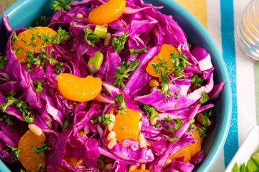

Purple Cabbage Salad

What is purple cabbage salad
A salad made with some of the following ingredients: red cabbage, viniger and canola oil.
Ingredients
- 2 1/2 cups shredded red cabbage
- 1(10ounce) can mandarin oranges,drained
- 1 green onion, chopped
- 1/4 cup sweetened dried cranberries
- 1/4 cup pine nuts
- 1/3 cup canola oil
- 1/4 cup viniger
- 1 tablespoon white sugar
- 2 pinches salt
Steps
- Lightly toss red cabbage, mandarin orange segments, green onion, and cranberries together in a salad bowl.
- Toast pine nuts in a small skillet over medium heat, stirring constantly, until fragrant and lightly browned, about 2 minutes. Remove immediately to a bowl and let cool.
- Whisk canola oil, vinegar, sugar, and salt in a bowl until sugar and salt have dissolved.
- Stir toasted pine nuts into salad and pour dressing over the top. Toss again to coat salad with dressing.
Home